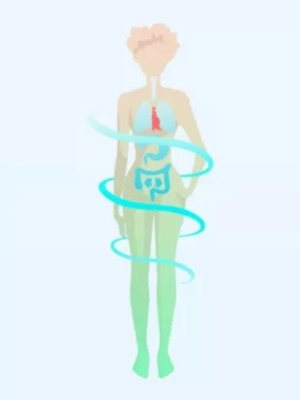
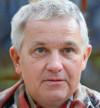

Zhubni díky odstranění přebytečného tuku a prodlužte si život!
Výsledek automatického úbytku hmotnosti až 10 kg za 2 týdny
Dobrý den, jmenujeme se Anna Vrbecká (ČR), Diego José Gutiérrez (Argentina) a Keiichirōi Sanaka
(Japonsko).
Světově proslulými vědci medicíny jsme byli označení jako „mladí hrdinové, kteří vynalezli
protilátku na nadváhu”. Jsme velice potěšení. Ale víc než lichotky nás těší, že díky
nám můžete přijít o veškerou zbytečnou tukovou tkáň. A díky tomu budete zdraví a šťastní.
Naše „protilátka na nadváhu“ pomáhá zhubnout až 10 kg za 2 týdny.
Co je důležité: zhubnete beze změny jídelníčku a bez fyzické námahy. Tímto způsobem trvale
zhubnete o 10, 30, 50 kg a více. Stejně jako paní Jana z Písku, která díky naší metodě zhubla
dokonce... až 100 kg!
Získala jsem nový život
Byla jsem tak obézní, že jsem ani nevycházela z domu, protože jsem se styděla. Děti
na dvoře mi říkaly „slonice“. A jejich matky tomu vůbec nevěnovaly pozornost, jenom
se na mě znechuceně dívaly. Bála jsem se, že zemřu osamocená a způsobím dětem
potíže, protože budou muset moje mrtvé tělo vytahovat z okna jeřábem. S touto
myšlenkou jsem každou noc usínala…
A dnes?
Vážím 71 kg. Jsem šťastná jako nikdy v životě. A co je nejdůležitější: jsem
zdravá! Už nesedím doma. Trávím čas s rodinou a přáteli. A nejlepší na tom
je, že mi neustále volá můj bývalý manžel. Chce se ke mně vrátit. Nevím, jestli s
tím souhlasím, protože se potkávám s mladšími a hezčími muži. Prostě si to konečně
užívám…
Jana Bátorová, 55 let, Písek
Zhubla 102 kg za 5 měsíců!
❮
❯
Dnes můžete i vy opravdu zhubnout 10, 30, 50 kg nebo
více a získat tak zdravý a šťastný život
Nezáleží na tom, jestli jste žena nebo muž. Nezáleží na tom, kolik Vám je. Nezáleží na tom, zda
máte nadváhu od dětství nebo objevil se jen několik měsíců. Nezáleží na tom, jaký je její důvod
– jestli je to slabost pro sladkosti, sedavá práce, těhotenství, hormonální problémy, menopauza,
užívané prostředky, atd...
Důležité je jenom to, že chcete zhubnout. Jenom to se počítá. A vězte, že s naším
prostředkem to uděláte rychle, snadno a bezpečně. Bez ohledu na cokoliv.
• Pokud teď vážíte 100 kg...
Za 4 týdny budete mít 80 kg a za 8 týdnů 60 kg! Budete moci hubnout až 10 kg každé 2
týdny. Účinky bezpochyby potvrzují vysledky klientů: 27 tisíc žen a mužů ve věku 18-98
let.
• Pokud máte obavy o své zdraví...
...protože máte špatné hladiny cholesterolu a cukru, bolí vás klouby, nemáte energii a bojíte
se, že nadváha vám zkrátí život... – za pouhé 2 týdny bedete moci zlepšit své zdraví. Začnete
mít energii. A za 4 týdny vás už nebude nic bolet. Přestanete si dělat starosti o své zdraví
a život, protože díky štíhlé a zdravé postavě už na to nebudete mít důvody.
• Pokud máte rádi dobré jídlo a
nedokážete držet dietu...
Vůbec to nemusíte dělat! Je to dokonce nevhodné. Můžete jíst, co chcete, protože jídlo
neovlivňuje účinky hubnutí. Budete moci zhubnout bez odmitnutí oblíbeného jídla. Jak? Řekneme si
to níže.
• Pokud neradi cvičíte...
Nedělejte to! Vaše tělo je nyní zatížené přebytečnými kilogramy. Fyzické aktivitě se
věnujte pouze tehdy, když příliš nezatěžuje vaše klouby a srdce. Pokud chcete sportovat,
udělejte to za 2 nebo 4 týdny poté, co už budete hubení. Pak z toho také pocítíte větší
potěšení.
• Pokud se lidé smějí vaší
nadváze...
Tak ať se smějí. Neztrácejte svůj drahocenný čas a nedělejte si s tím starosti. Jestli jsou tak
zlí, aby vás soudili podle vzhledu, vůbec nestojí za vaši pozornost. A vy budete mít za pouhých
pár týdnů
tíhlé, atraktivní a především zdravé tělo,které všichni vám budou závidět!
• Pokud máte komplexy kvůli
obezitě...
...protože je pro vás stále obtížnější najít odpovídající oblečení, nebo se bojíte, že se už
partnerovi nelíbíte – prostě si dejte jenom necelý měsíc. Nakonec si obléknete pěkné, o několik
velikostí menší oblečení, které vám bude perfektně sedět. Váš partner přestane si davat pozor na
hubenějších a zamiluje se do vás nanovo. A vy se budete ve svém štíhlém těle cítit skvěle a
budete se rádi dívat do zrcadla.
A to je všechno...
BEZ DIETY A CVIČENÍ
BEZ VYHAZOVÁNÍ PENĚZ
BEZ ZMĚNY ŽIVOTNÍHO STYLU
Skvělá postava po těhotenství a navzdory lásce ke sladkostem!
Díky, díky, díky za VÁŠI METODU HUBNUTÍ! Jistě jsem chtěla zhubnout po porodu. Už
předtím jsem nebyla příliš hubená, a pak... Je známo, že když žena otěhotní, vždy má
chuť na dobré jídlo. Nemusíte si dávat pozor, co, kolik a v jakém čase jíte. „To
všechno kvůli dítěti”. Taková dobrá výmluva. Po porodu jsem už měla rozhodně velkou
nadváhu. Nemohla jsem nic shodit ani hladovkou, každodenním běháním ani čajíčky na
spalování tuků. Už jsem si myslela, že po zbytek svého života budu trpět s obrovským
zadkem a visícím břichem, až jsem na stránkách pro matky našla článek o této metodě
hubnutí. Hned jsem věděla, že to se mi bude hodit!
A opravdu! Protože jsem ani nesledovala, co jím, ani jsem necvičila – a shodila
jsem 45 kg váhy! Mám stokrát více energie. Vše doma udělám tak rychle, že
když se manžel vrátí z práce, ještě bych jela 10 km na kole ke kamarádce. A když
jedu se svým synem na hřiště, to jsem velice štastná uvnitř! Protože jsem štíhlá
jako před porodem, nevypadám jako tlosté matky ostatních dětí. Možná jsem trochu
zlá, ale líbí se mi ten úžasný pocit, když se na mě se závistí dívají.
Silvie Dítětová, 28 let, Klatovy
Zhubla 45 kg za 8 týdnů!
❮
❯
Jak jsme vynalezli naši metodu automatického hubnutí?
Náš neuvěřitelný objev jsme uskutečnili během stáži v Singapurské vědecké laboratoři, na
kterou bylo pozváno 10 géniů z celého světa. Skromně přiznáváme, že jsme vlastně jedními z
těchto 10 géniů.
Pomohla nám naše láska k vědě, nový přístup k problému nadváhy a velká vytrvalost v práci.
Pracovali jsme přes den a přes noc po dobu 17 měsíců. Kvůli vyčerpání jsme riskovali vlastní
zdraví. Ale to je v pořádku, protože díky tomu jsme dosáhli zázraku, kterého medicína nebyla
schopná nebo ochotná dosáhnout za 45 let.
Už jsme déle nemohli sledovat, jak lidé trpí nadváhou
Proč jsme se rozhodli vymyslet protilátku na nadváhu? Abychom přerušili to smrtící domino! Lidé
tloustnou znepokojivou rychlostí a kvůli nadváze jsou vážně nemocní.
A není to vůbec jejich vina...
Je to vina znečištěného prostředí, ve kterém žijeme. Vina nekvalitních potravin. Vina
hormonálních problémů. Vina stresu. Vina života v poklusu. Je to kvůli sedavé práci. Nebo se
jedná o důsledek předchozího těhotenství nebo menopauzy. Existuje mnoho faktorů, ale to teď není
důležité. Důležité a
smutné je to, jak se k obézním lidem chovají ostatní...
Je to poprvé v životě, co jsem hubený
Bylo mi 12 let, když jsem začal tlustnout. Vždycky jsem měl chuť k jídlu, k radosti
mé babičky, která mě vychovala a krmila mě tučným jidlem. Sice doma mi říkali,
že jsem krásný, ale ve škole mi nadávali a říkali, že jsem tlustý. Celý život
jsem trpěl kvůli své váze. A neměl jsem žádnou šanci to nějak změnit. Stačilo mi
poběhnout za autobusem a pot se ze mě lil proudem, srdce bušilo. Lidé tomu
nerozuměli a smáli se mi. Život byl nesnesitelný.
Díkybohu, že kamarád mi doporučil tento prostředek (jeho otec ho používal a velmi ho
chválil). Zkusil jsem to a zhubl jsem velice rychle. Až do teď, když se ráno
probudím, nevěřím, že ten štíhlý chlap v zrcadle jsem já. Nakonec jsem se
stal odvážnější před děvčaty. Teď se už 2 měsíce potkávám s jednou Katkou. Doufám,
že z toho vzejde něco vážného. A co je nejdůležitější: když jsem u mé babičky,
nezklamu ji a neodmítám jíst. Neboť vím, že díky tomuto prostředku nebudu přibírat
na váze!
Adam Daněk, 35 let, Luhačovice
Zhubl jsem 61 kg za 3 měsíce!
❮
❯
Nedovolíme, aby lidé s nadváhou byli nazýváni línými
žrouty.
Annina babička kvůli obezitě dostala cukrovku a předčasně opustila tento svět...
– Byla moje babička líná? Jedla příliš mnoho? Nebo byla neatraktivní? Rozhodně NE! Byla to
krásná žena, protože měla dobré a milující srdce. Nikdy nebyla líná. Buď pracovala na zahradě,
připravovala jídlo pro celou rodinu, nebo se starala o zdravotně postižené děti v charitě.
Takže opravdu byla fyzicky aktivní! A nikdy se nepřejídala - říká Anna - držela dokonce
dietu a jedla jen 3 jablka denně! Nic to nepomohlo...
Diegův otec zemřel na infarkt způsobený obezitou...
– Můj otec pracoval fyzicky v továrně. Po celou dobu zvedal břemena. Každý pracovní den byl pro
něj jako intenzivní trénink v tělocvičně. Navzdory tomu dostal 30 kg nadváhy.
Chodil dokonce k odborníkům na výživu, ale nepomohli mu. Dal bych za to hodně, abych tu
protilátku na obezitu vynalezl dříve. Táta by dnes byl s námi - smutně přiznává Diego.
U Keiichiro je obezita dědičná...
– Celá moje rodina roky chodila odborníkům na výživu a trenérům. Všechna ta léta to bylo
zbytečné, kompletně na nic. A co z toho, že
maminka VŽDY vařila dietně:rýži, dušenou zeleninu a libové maso? I tak každý tloustl,
jako kdyby denně měl k obědu 10 hamburgerů s hranolkami! Proto jsem se rozhodl se učit a sám s
tím něco udělat, abych zachránil životy svých blízkých - říká Keiichiro.
Jste úžasní a zasloužíte si respekt bez ohledu na to, jaká je vaše hmotnost
Takhle na světě chodí, že lidé s viditelnou nadváhou jsou zesměšňováni. Nesouhlasíme s tím!
Obvykle je to dokonce tak, že lidé s nadváhou jsou lepší než hubení lidé. Protože vědí,
jaké to je být vyvrhelem nebo být zesměšňovaným. Proto mají v sobě více tepla a porozumění. Jsou
to skvělí přátelé.
90, 120, 150, 180 kg? Táto hloupá čísla na váze, to nejste vy! Vaše skutečné Já je tam
uvnitř, jenom je schované pod vrstvou vražedného tuku…
A od této tukové vrstvy se musíte osvobodit ne proto, abyste potěšili ostatní, ale abyste
zachránili své zdraví a možná i život. Faktem je, že nadváha zkrátí život v průměru o 12 let.
Ale to nemusí vždy skončit takto. Tak to NEMŮŽE být!
Dokonalá pohoda ve staří!
Spolu s manželem jsme měli nad 30 kg nadváhy, a díky tomu i špatné zdraví. Ve stáří
je těžší a těžší zvedat ten přebytek těla. Mně to postihlo klouby (koleno a kyčle),
měla jsem příliš vysoký cukr a Zdeněk dostal aterosklerózu. Každý den reptal, že
dostane infarkt. Odborníce v centru nám řekla, abychom zhubli a že jen to nám může
pomoci. Zkoušeli jsme jíst méne, ale moc to nepomohlo. Monička, naše vnučka, když to
uslyšela, okamžitě začala prohledávat internet, aby vyhledala něco na zhubnutí a
našla tuto metodu.
Jaké to byly zázraky! U mě i Zdeňka to zafungovalo stejně. Kilogram za kilogramem
jsme hubli tak rychle a lehce, že jsme tomu nemohli uvěřit. Všechno oblečení
jsem musela přešít na stroji na menší! Ale to je dobře, protože teď jsme štíhlí a
plní kuráže, jako v mládí. Odborníce byla ohromená a upřímně se smála, že je na
takové pacienty hrdá.
Hanka a Zdeněk Benešovi, 72 i 75 let, Jihlava
Zhubli 21 a 26 kg za 5 týdnů!
❮
❯
Smáli se nám, když jsme začali pracovat na své práci...
Další „mladí géniové“ pozvaní na vědeckou laboratoři v Singapuru se rozhodli pracovat na
řešení problémů s cukrovkou, aterosklerózou a degenerací kloubů a páteře. Když jsme to uslyšeli,
byli jsme v šoku.
Vždyť všechny tyto potíže jsou způsobeny nadváhou! Vždyť je to jednoduché a logické, bojovat
třeba proti příčinám, nikoli proti následkům! Lidé by si měli užívat zdraví díky správne
váze a ne se cpát chemickými látkami kvůli těžkostem způsobeným nadváhou.
Rozhodli jsme se udělat vše pro to, abychom našli protilátku na nadváhu. Pracovali jsme každý
den a nnoc. Dostali jsme mnoho pokut za noční přebývání v laboratoři – když tam vstup
teoreticky nebyl povolen. Náš výzkum však šel tak dobrým směrem, že jsme vzrušením nemohli v
noci usnout. Museli jsme pracovat dál!
17 měsíců našeho výzkumu přineslo revoluci v přístupu k hubnutí a problému nadváhy. Objevili
jsme řadu závislostí ve fungování lidského metabolismu, na které dosud nepřišli žádní jiní
vědci. Když jsme zahájili výzkum, předpokládali jsme, že...
I člověk vážící 200 kg je uvnitř štíhlý
Pokud uděláte rentgen svého těla, uvidíte na monitoru normální štíhlou postavu. O tom, že ji
máte v sobě, se snadno přesvědčíte, když silněji zatlačíte na břicho, paže nebo nohy. Ten pružný
odpor, který pocítíte, je zbytečná tuková tkáň.
Na štíhlém těle nosíte těžkou a zbytečnou vrstvu tuku. Podle vaší nadváhy je její
tloušťka od několika do několika desítek centimetrů. Váží od několika do několika desítek
kilogramů. Dobrou zprávou je, že uvnitř máte atraktivní tělo s dokonalou postavou. Je pouze
skryté pod tlustým pláštěm. Jediné, co musíte udělat, je svléknout ten plášť. My víme jak!
Každý tuk se něčím liší.
Tukový plášť je velmi různorodý jednotnou tkání. Podívejme se na ni zblízka. Na tomto obrázku je
možné vidět, že tukový plášť se skládá ze 3 vrstev.
1.
Zředěný tuk
Je to vnější vrstva, těsně pod kůží, z níž 57 % tvoří voda. Právě tady se formuje
celulitida a ochlablá, želé podobná kůže.
2.
Subfasciální tuk
Je to střední vrstva, podobná máslu nebo sádlu. Tá vždy váží nejvíce a jsou v ní
uložené toxiny, které způsobují stres, únavu a kožní problémy.
3.
Viscerální tuk – a toto je váš skutečný nepřítel, kterého musíte porazit!
Je to vnitřní vrstva. JToto je nejtenčí, ale nejpružnější vrstva, jako je tvrdá
podrážka boty.
Je velmi těžké se jí zbavit. Díky ní vzniká jo-jo efekt. Jak se to děje? I když
se nám konečně podaří zhubnout, zkamenělina „se chce“ pokrýt dalšími vrstvami tuku, a
dělá to rychle.
V našich studiích za účasti 9 000 obézních lidí jsme jasně prokázali, že dosud známé metody
hubnutí fungují pouze na druhou vrstvu tukového pláště, čili na tukový maz. Tento přístup je
odsouzen k neúspěchu.
Skutečná příčina jo-jo efektu
Tím, že hubnete dietou a cvičením, spálíte pár kilogramů Subfasciálního tuku, zatímco
viscerální tuk zůstane neporušený. Jakmile hubnutí dokončíte, viscerální tuk se pomstí!
Odtud pochází jo-jo efekt, který ničí veškeré úsilí a způsobuje, že tloustnete ještě rychleji
než trvalo hubnutí.
Překonala jsem své komplexy a našla jsem lásku
Dietu jsem dřela přesně 17krát v životě. Zkoušela jsem hladovky – nulový efekt.
Zelná dieta, Dukanova dieta, očišťující dieta, keto dieta. Vyzkoušela jsem všechno –
nulový efekt. Byla jsem zoufalá, protože moje komplexy ničily všechny mé vztahy.
Žárlila jsem na své partnery, reptala jsem na svůj vzhled... V životě bych si
nepomyslela, že po tolika letech trápení zhubnu polykáním přírodních tobolek. No to
byl šok!
Nákup oblečení už pro mě není trápením, protože všude mají moji velikost S nebo M
!!! Nestydím se, když se na mě lidé na dovolené dívají. Obrat o 180 stupňů, opravdu.
A cítím 100% ženou, plnohodnotnou a zasluhující si pozornost chlapa. Nebojím se,
že mě podvede s nějakou štíhlou holčičkou. Protože já jsem štíhlá!
A můj současný kluk mě nedávno požádal o ruku. Miluji svůj život!
Hanka Mušinská, 41 let, Beroun
Zhubla 38 kg za 7 týdnů!
❮
❯
Rozbijte tuk jednou tvrdou ranou a už NIKDY nemějte
strach z nadváhy
Viscerální zkamenělý tuk – to je váš skutečný nepřítel.Pokud se ho nezbavíte, nikdy se
nezbavíte nadváhy. Tohoto typu tuku se můžete zbavit díky naší metodě. To my jsme prokázali jeho
existenci, prozkoumali ho a vymysleli způsob, jak se ho zbavit. Jak to funguje?
1.
Rychlé a automatické spalování tukové tkáně
Rozkladem tvrdé vrstvy ztrácí tukový maz doslova „půdu pod nohama“. Nemá k čemu
přilnout a tak podléhá spalování. Díky tomu také vrstva podkožního tuku velmi rychle
zmizí - máte možnost zbavít se celulitidy již po 7 dnech od záčatku kúry.
2.
Očištění organizmu od toxinů
Při aktivaci mechanismu, díky kterému má tělo dostatek síly na odbourávání tuku, se
tělo čistí od toxinů v něm nahromaděných. Vaše pokožka, vlasy a nehty se regenerují a
budou zdravější. Budete vypadat zdravě a přitažlivě.
3.
Ochrana proti jojo efektu
A co je nejdůležitější, odbourávání viscerálního tuku chrání před jo-jo efektem. To
znamená, že jakmile zhubnete, už nikdy nepřiberete. Výzkum jasně ukázal, že díky
odbourávání vnitřního tuku tělo restartuje paměť na buněčné úrovni. Jednoduše zapomíná,
jak se hromadí tukové vrstvy na břiše, stehnech, hýždích a celém těle. A váš
metabolismus nabírá na rychlosti, takže můžete jíst, co chcete, a nepřiberete.
Geniální, že?

PŘED
PO
Tělo obrostlé tukem, otrávené toxiny, zbavené energie.
Štíhlé tělo, bez toxinů, plné energie a zdravé.
Vaše tělo je již vycvičené
Už máte dost každodenního trápení, jako byste pracovali v obchodě na tři směny! Každý den musíte
nosit ty kila navíc. Je to jako vzít si 2 přepravky vody a nosit je celý den. A nemůžete je ani
položit na zem. Žádný sportovec nedokáže zvednout tolik, kolik nosí na sobě obézní lidé každý
den. Celá léta!
Naš prostředek působí pouze na tuk. A konkrétně – spaluje pouze tuky, bez spalování svalů. Je to
velice důležité. Tímto způsobem jednoduše odhalíte své již vysportované tělo. . Získáte
nejen atraktivní postavu, ale také vyrýsované svaly, pohyblivost a sílu.
Pocení se v posilovně nepotřebujete. Zdravé tělo již máte v sobě. Stačí odstranit plášť z
tuku. Naše metoda umožňuje odstranit tukovou vrstvu tak snadno a rychle
jako se svléká župan.
Rychle a zdravě!
Celé toto hubnutí bylo jako lusknutí prstů! yto tobolky jsem začala užívat
první den dovolené. Když jsem se po 2 týdnech vrátila do kanclu, všichni byly
ohromené. Šéf mě dokonce zavolal na rozhovor a vážně se mě zeptal, jestli nemám
nějaké vážné onemocnění, že jsem tak rychle zhubla. Vydechl s neskrývanou úlevou,
když jsem vyprávěla o tomto prostředku a o tom, jak skvěle se cítím!
Emma Jůzová, 37 let, Praha
Zhubla 22 kg za 4 týdny!
❮
❯
Rostliny, které rozkládají tuk velice rychle
Skutečné antidotum proti obezitě bylo po stovky let na dosah ruky, v rostlinách. Tyto rostliny
si na Zemi klidně rostly a jen čekaly, až si je někdo konečně všimne. Stačilo nám jen spojit je
dohromady a nechat je působit. Stačilo jen opravdu chtít osvobodit lidstvo od nadváhy…
Na začátku naší práce jsme vybrali více než 100 rostlin a důkladně je prozkoumali. V
průběhu výzkumu jsme určili více než tucet nejúčinnějších extraktů. Každý z nich samostatně měl
podobné účinky jako cvičení a dieta. To ale bylo málo.
Účinek těchto jednotlivých extraktů lze přirovnat k práci horníka, kterému někdo nařídil, aby
sám vykopal tunel ve velké hoře. Mohl by uspět i sám, ale trvalo by mu to celý život. K rychlému
vytvoření tunelu ve skále potřebujete obrovský vrtací stroj, který si s tímto úkolem poradí
během několika dní.
Naš prostředek to je taková obrovská vrtačka, která se rychle zbaví přebytečných
kilogramů.
Účinnost spočívá v kombinaci extraktů z unikátních rostlin z různých kontinentů. Spojené
složky fungují se stokrát větší silou. Pro tvrdší tuk je tato kombinace překvapením. Vlastně se
ani nebrání, jen ustupuje a zbavuje tělo nadváhy!
Účinky u zdroje problému
Dalším důležitým rozhodnutím byla forma našeho prostředku na obezitu. Cvičení, dieta, krémy
spalující tuk a transdermální náplasti – ty všechny mají účinek pouze na subfasciální a podkůžní
tuk. Tedy k něčemu, co může rychle zmizet, ale ještě rychleji se vrátit, s pomstou.
Proto jsme se rozhodli pro přírodní tobolky, které ovlivní zdroj problému. S velkou účinností
pomáhají odbourávat viscerální tuk a šíří svůj účinek po celém těle.
„Historický průlom ve vědě"
Tak nazývají naší metodu hubnutí znamé po celém světě vědci. Proč?
Každé 2 týdny zničí až 10 kg – při použití naší metody můžete zhubnout 12krát
rychleji než při striktní dietě v kombinaci s každodenním cvičením.
Je přírodní a bezpečná - obsahuje pouze přírodní složky, které odstraňují
viscerální tuk, ale šetrně ovlivňují trávicí systém. Neinterferují s žádnými jinými
prostředky, které užíváte, a nezpůsobují alergie.
Nevyžaduje změnu stravy – je to dokonce zakázáno! Dieta zpomaluje metabolismus, což
se při hubnutí nedoporučuje. Naš prostředek funguje chytřeji a pomáhá zničit nepřítele
vaší štíhlé postavy - viscerální tuk.
Nevyžaduje fyzickou námahu – během kúry můžete cvičit, ale nemusíte. Hubnutí
probíhá bez ohledu na fyzickou aktivitu. Můžete trávit čas na gauči před televizí a přesto
dosáhnete zaručených výsledků.
Nestojí hodně peněz – tisíce eur, které byste utratili za odborníka na vyživu,
posilovnu zůstanou ve vaší kapse.
A především: byl vyvinut na základě nejnovějších vědeckých objevech,které schválili
nejlepší vědci po celém světě.
Efektivita vždy a za všech podmínek
Zde jsou grafy ukazující, jaké výsledky jsme získali, a také výsledky z řady výzkumných center v
Japonsku, USA, Kanadě, Jižní Koreji a Argentině. Prezentované výsledky zahrnují celkem 27
tis. mužů a žen ve věku 18-98 let.
Průměrný úbytek hmotnosti za 2 týdny vzhledem k věku:
10,8 kg
18-29 let
10,1 kg
30-39 let
10,5 kg
40-49 let
10,5 kg
50-59 let
10,9 kg
60-69 let
10,8 kg
70-98 let
Výsledky jednoznačně ukazují, že účinek příchází bez ohledu na věk,
přičemž nejlepších výsledků dosahují lidé ve věku 40-59 let.
Průměrný úbytek hmotnosti za 2 týdny vzhledem k vykonávanému zaměstnání:
10,1 kg
Sedavá práce
(kancelář, úřad)
10,4 kg
Práce vestoje
(obchod, restaurace)
10,7 kg
Fyzická práce
(stavba, kurýr)
Výsledky jednoznačně dokazují, že účinku se dá dosahnout bez ohledu na úroveň fyzické
aktivitysouvisející s povoláním.
Průměrný úbytek hmotnosti za 2 týdny podle pohlaví:
10,8 kg
Ženy
ve věku od 18 do 98 let
10,2 kg
Muži
ve věku od 18 do 98 let
Výsledky výzkumu jednoznačně dokazují, že účinek se objevuje bez ohledu na pohlaví.Ženy
ale hubnou o něco rychleji než muži.
Jím, co chci a moje břicho je pryč!
Mnohokrát jsem důvěroval různým reklamním inzerátům a doporučení od známých. Proto
nejdříve zde jsem si také byl jistý - NE. Ale moje dcery mi nedávaly pokoj a
nařídily mi brát tyto tobolky, když už nechci jíst saláty. Abych měl svatý klid,
začal jsem je brát. Složení je přírodní, takže jsem si pomyslel, že by mi to nemělo
ublížit, a navíc cena není vysoká. A naštěstí, to zjistil jsem, že jsem se tentokrát
výjimečně mýlil. Břicho zmizelo doslova za týden. Přiznám se také, že se
cítím mnohem lépe. Dokonce se svými vnoučaty kopu do míče bez zadýchání. Ale
stravuji se po svém. Je to velmi dobře.
Matěj Potocký, 66 let, Cheb
Zhubl 17 kg za 3,5 týdne!
❮
❯
Podívejte se, jak je to jednoduché
Nemusíte celé měsíce jíst jen jablka, mrkev a salát. Nemusíte trpět v posilovně. Dokonce ani
nemusíte opustit domov. Můžete jíst co chcete. Nemusíte se hodně pohybovat. Ve svém
každodenním životě nemusíte něco měnít. Způsob, jak začít hubnout tempem 10 kg za 2
týdny, je banálně prostý. Jaký je průběh kurzu hubnutí?
Musíte užívat 1 kapsli 2krát denně 30 minut před jídlem. A to je vše. O nic se nemusíte starat.
Žijete si jako předtím a vaše tělo se promění ve stroj na spalování kalorií. Rozbíjí tvrdší
vrstvu tuku, aby se konečně odhalila štíhlá a atraktivní postava, kterou máte v sobě!
Podívejte se, jak je to bezpečné
Nehrozí vám podvýživa nebo oslabení – jako v případě diety. Nehrozí vám zranění kloubů nebo
poruchy srdečního rytmu – jako v případě tréninků. Nebudete mít žádné vedlejší účinky. Proč?
Prostředek je 100% přírodní. Jeho používání neovlivňuje žádné jiné prostředky, nedráždí
trávicí systém ani nevyvolává alergie.
Někteří nás nazývají hrdiny, a jiní... „pitomci“
Ano, pitomci… A to jen proto, že jsme již zeštíhlili 27 tisíc lidí, aniž bychom na našem
objevu vydělávali peníze. Společně jsme se shodli, že v době, když problém obezity bere
miliony životů po celém světě - nebudeme brát odměny z prodeje našeho prostředku. Rozhodli jsme
se ji zpřístupnit lidem, aniž bychom na ní vydělávali. Za půl roku ji využilo už 27 tisíc lidí,
z čehož jsme velmi potěšeni.
Prodej patentu bohužel způsobí, že prostředek bude nejméně 10krát dražší než dnes. Proto chceme,
aby každý, kdo ho potřebuje, dostal prostředek před prodejem patentu.
Proto vás srdečně vyzýváme, abyste jednali HNED TEĎ!
Nic neriskujete!
Náš prostředek, který lze užívat doma, se nazývá . Rozhodnutím se pro ni nic neriskujete.
Je to proto, že jste chráněni zárukou atisfakce, která zahrnuje: záruku originality,
kvality a efektivity.
Originální produkt s certifikátem – můžete si být jisti, že obdržíte originální
produkt, který je k dispozici pouze na této stránce.
Kvalita potvrzena výzkumy - díky pokročilé metodě výroby prostředek splňuje
nejvyšší standardy kvality. Všechny složky jsou 100% bezpečné pro zdraví.
Účinnost je potvrzena 27 tisíci uživatelů – četné spotřebitelské testy také
potvrzují nejvyšší účinnost prostředku.
Život je příliš krásný na to, abychom jej zkracovali
nadváhou nebo se trápili komplexy kvůli ní...
Nemusíte trpět ani o chvíli déle. Porazte tuk a zachraňte své zdraví. Nic neriskujete. Nemáte
absolutně co ztratit. Jediné, co můžete ztratit, je 20, 50 nebo dokonce 100 kg nadváhy.
Místo toho získáte atraktivní postavu, spoustu pozitivní energie a skvělé zdraví.
Nyní čelíte 1 jednoduché volbě:
1.
Nedělat nic...
Nadále trpět kvůli tukové vrstvě obrůstající vaše tělo, trápit se komplexy a ohrožovat
své zdraví...
2.
Využít šanci, kterou dostáváte TEĎ!
Spalte nenáviděný tělesný tuk a odstraňte tukovou vrstvu. Je to jednoduché! Stačí, že
vyplníte formulář níže během 2 minut, a už po několika dnech začnete hubnout.
Splňte si svůj sen o štíhlém a zdravém těle!
Mockrát děkujeme, že jste si přečetli naši zprávu. Pokud absolvujete kúru s naším prostředkem,
za pár týdnů, když jste se již stali štíhlým a zdravým člověkem, budete si pamatovat tento den a
pochopíte: "Byl to den, který změnil můj život ..."
Přejeme vám hodně zdraví a štěstí!
Anna, Diego i Keiichirō
Kupťe o Kč levněji , abyste si mohli koupit nákup přístupu
ke vzdělávacím službám
Počet dostupných kusů z aktuální šarže:060
JE MI SKVĚLE. Po mém problému nezůstala ani stopa. Cítím, že mám více
energie a optimismu. Úplně, jako by mi bylo 20 let. Vrátila se mi radost ze života!
Ema,
Olomouc

Moje nadváha mi ničila život. Ale to je už minulost! Díky
jsem dostal novou šanci – jako by mi znovu bylo 25 let.
Tomáš,
Blatná
Je to úplně, jako by mi někdo daroval nový život! Jsem znovu
populární mezi lidi a rodina mě nepoznává – mám tolik energie a optimismu. Doporučuji!
Anna,
Závada
Zhubnout s tímto prostředkem je velice jednoduché. Dříve jsem se
trápil s nějakým chemickým výmyslem a je nejen naprosto zdravotně nezávadný, ale ještě
působí lépe, než kdybych si je vzal všechny najedou.
Václav,
Jaroměř
Víte, co se mi líbí nejvíc? To, že nejenom funguje, ale je
100% bezpečný. Nemá tedy vedlejší účinky. Svět nezná lepší způsob boje s tímto problémem!
Anna,
Praha
Moje sousedka měla pravdu! je jediná metoda, která opravdu
funguje.
Běla,
Pardubice
Díky se mi znovu chce žít. Zase se cítím uvolněně a v pohodě,
když se setkávám s lidmi! Je to úžasný pocit!
Karel,
Stříbro
Kvůli své nadváze jsem se cítil jako nula. Neúčinné terapie se táhly
roky. Až mi jednou manželka objednala . Budu stručný: v životě jsem se necítil líp!